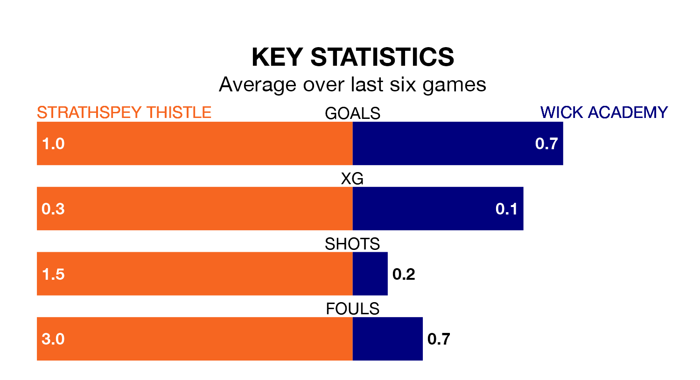

Wick Academy are strong favourites to take all three points despite Strathspey Thistle's home advantage in Wednesday's late match at Seafield Park.
*Betting Company* are offering odds of 1.67 on Wick Academy sealing the win, with the visitors sitting 14th in the Highland Football League table.
Strathspey Thistle, who are 18th in the league and nine points behind Wick Academy, are priced at 3.4 to win. A draw is set at 4.6.
Strathspey Thistle are in terrible form in the Highland Football League, with no wins and a draw from their last six games.
With a win and two draws over that period, Wick Academy's form is better – they have taken five points from 18, compared to the hosts' one.
In the last 10 years, Strathspey Thistle and Wick Academy have played each other on 11 occasions. Strathspey Thistle won one of them and Wick Academy the other.
On average, Strathspey Thistle scored 0.7 goals and Wick Academy 3.5 in those matches.
Their last meeting was on February 3, when Wick Academy won 3-2 at home.
With 21 goals in 19 games so far this season, the away side are the league's lowest scorers with 1.1 goals per game. And they are conceding more than average, letting in 49 goals at a rate of 2.6 per game.
Strathspey Thistle are also below average scorers, with 1.1 goals per game, compared to a league average of 1.9. They have conceded 3.6 goals per game.
Strathspey Thistle's last match was on Saturday, a 2-1 loss against Lossiemouth.
Wick Academy beat Strathspey Thistle 3-2 last time out, on February 3.
Updated: 09:02 (UTC), 13/02/24